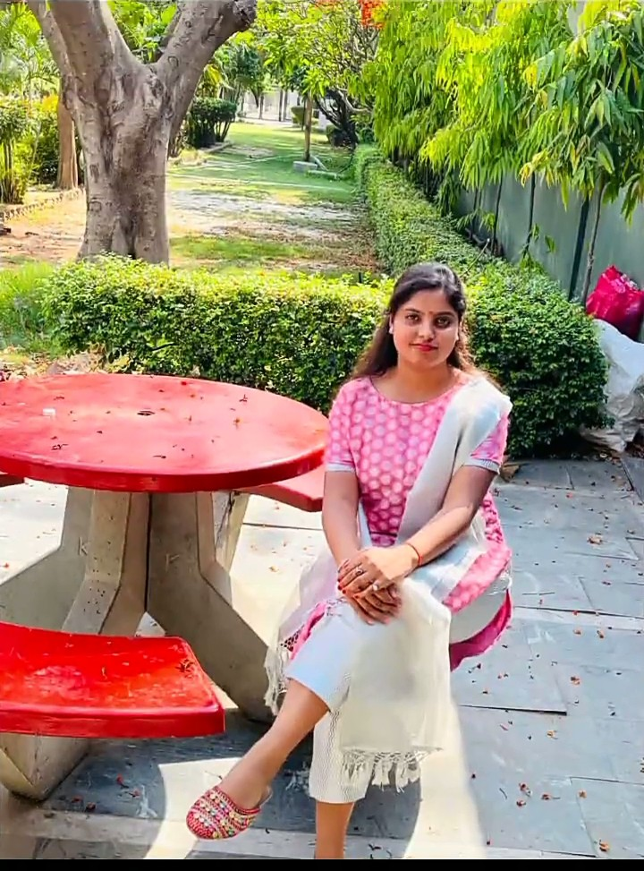

Hello, I'm Sakshi Verma, a passionate and dedicated software engineering enthusiast. I hold a Bachelor's degree in Computer Applications (BCA)
from the prestigious United Institute of Management. With a solid foundation in programming and web technologies, I am eager to embark on a fulfilling
career journey as a Software Engineer.
During my academic journey, I had the incredible opportunity to gain practical experience through a dynamic internship in website development.
Collaborating with a skilled team, I honed my skills in Java, HTML, CSS, and JavaScript, crafting engaging and user-friendly web applications.
I am proud of my contributions to enhancing user experiences and solving technical challenges during this internship.My ambition to excel in
the software engineering realm is fueled by a genuine passion for coding and an insatiable curiosity for cutting-edge technologies.
As a fresher, I am committed to continuously enhancing my skills, learning from experienced professionals, and contributing my innovative
ideas to drive the success of software engineering projects.
With a solid educational background, hands-on internship experience, and a determination to make a mark in the software engineering landscape,
I am excitedly seeking opportunities to contribute to dynamic teams and make meaningful contributions to innovative software solutions.
Thank you for considering my profile. I look forward to the prospect of joining a forward-thinking company as a Software Engineer and
embarking on a journey of continuous growth and achievement.
Sincerely, Sakshi Verma
